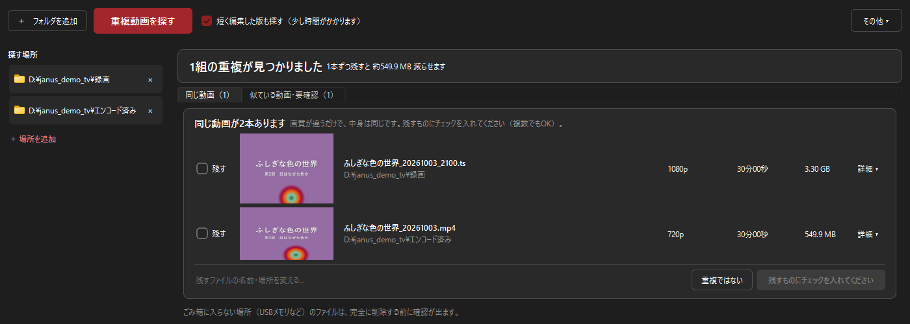

録画したテレビ番組の重複を整理する方法
録画した TS と、エンコードした MP4。別のドライブに取ったコピー。PCで録画を続けていると、同じ番組がいつの間にか何本も残っていきます。ファイル名ではなく映像の中身で見つけて、まとめて片付ける方法を紹介します。
こんな状態になっていませんか
- 録画した
.tsを MP4 にエンコードしたあと、元の TS も消さずに残している - 同じ番組を、別のフォルダや外付けHDDにもコピーしてある
- ファイル名を付け直したので、どれとどれが同じ番組なのか分からない
地上デジタル放送の TS は、30分番組でも 3〜4GB ほどになります。二重に残っているだけで、ドライブの容量はすぐに足りなくなります。
ファイル名や容量では見つけられない理由
一般的な重複ファイル検索ソフトは、ファイル名やファイルの中身（ハッシュ値）が完全に同じものを探します。ところが、TS を MP4 にエンコードすると、形式も解像度もビットレートも変わるため、ファイルとしては「まったく別物」になります。そのため、こうした録画の重複は、これまでは1本ずつ再生して見比べるしかありませんでした。
Janus - 重複動画ファインダー は、動画のいくつかの場面を取り出して、映像そのものを比べます。形式や画質が違っていても、同じ番組かどうかを判定できます。
整理の手順
- 「＋ 場所を追加」で録画フォルダを選ぶ
TS を置いているフォルダと、エンコード後の MP4 を置いているフォルダの両方を追加します。外付けHDDも追加できます。 - 「重複動画を探す」を押す
初めて探すときは、1本ずつ詳しく調べるため時間がかかります。2回目からは、前回から変わっていない動画を調べ直さないので速くなります。 - 結果を確かめて、残すものにチェックを入れる
チェックを入れなかったファイルだけが、ごみ箱へ移ります。移す前に必ず確認画面が出ます。
録画のパターン別：どう表示されるか
TS とエンコード後の MP4（カットなし）
長さがほぼ同じなので、「同じ動画」のタブにまとめて表示されます。画面の上には、1本ずつ残した場合に減らせる容量も表示されます。

どちらを残すかは、ご自身で選んでチェックを入れてください。容量を減らしたいなら MP4、元の画質を残したいなら TS です。なお、解像度を変えずにエンコードした場合は、ビットレートが一番高いファイルに「おすすめ」の印が付き、最初からチェックが入ります。解像度を下げてエンコードした場合（1080p → 720p など）は画質の違うファイルとみなすため、「おすすめ」は付きません。
同じ録画を別の場所にコピーしたもの
中身も長さも同じなので、「同じ動画」のタブに表示されます。ファイル名を変えてあっても見つかります。
見つけられないことがあるもの
- CMカット版と、カット前の録画：長さが違う組み合わせは、「短く編集した版も探す」にチェックを入れると「似ている動画・要確認」のタブで探せます。ただし、現在のバージョンは数分程度の短い動画向けで、30分以上の番組では見つからないことが多いです。
- 前後の余白だけが違う、ほぼ同じ長さの録画：録画の開始・終了のタイミングがずれて、長さが数秒以上違う場合です。たとえば、同じ放送を2回録画した場合や、再放送を録画した場合です。現在のバージョンでは見つからないことがあります。
- 画面の縦横比が違うもの：4:3 と 16:9、黒帯の有無などで映り方が違うと、別の映像と判定されることがあります。
- PCで再生できないファイル：ブルーレイ／DVDレコーダーの中にある録画や、コピー制御のかかったファイルは調べられません。PCに保存してあって、ふつうに再生できる動画ファイルが対象です。
安心して整理するために
- 削除ではなくごみ箱へ移すので、間違えても元に戻せます（USBメモリなど、ごみ箱に入らない場所のファイルは、移す前に知らせます）
- 何をいつ整理したかは、あとから記録で確認できます
- インターネット通信は行いません。録画ファイルの情報が外に送られることはありません
まずは無料体験版で
Microsoft Store 版には無料体験版があります。重複の検出と確認は製品版と同じで、利用期間の制限もありません（ごみ箱への移動は合計10件まで）。お使いの録画フォルダで、どれだけ重複が見つかるかを先に確かめられます。
| 対応OS | Windows 11（64bit版） |
|---|---|
| 対応形式 | .ts / .m2ts / .mp4 / .mkv / .avi / .mov / .wmv / .flv / .webm / .m4v / .mpg / .mpeg |
| 価格 | 980円（税込） |